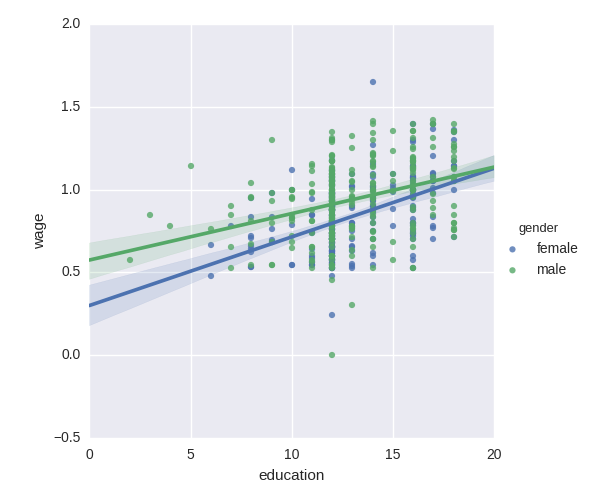

Wages depend mostly on education. Here we investigate how this dependence is related to gender: not only does gender create an offset in wages, it also seems that wages increase more with education for males than females.
Does our data support this last hypothesis? We will test this using statsmodels’ formulas (http://statsmodels.sourceforge.net/stable/example_formulas.html).
Script output:
OLS Regression Results
==============================================================================
Dep. Variable: wage R-squared: 0.193
Model: OLS Adj. R-squared: 0.190
Method: Least Squares F-statistic: 63.42
Date: Wed, 26 Aug 2015 Prob (F-statistic): 2.01e-25
Time: 10:15:04 Log-Likelihood: 86.654
No. Observations: 534 AIC: -167.3
Df Residuals: 531 BIC: -154.5
Df Model: 2
==================================================================================
coef std err t P>|t| [95.0% Conf. Int.]
----------------------------------------------------------------------------------
Intercept 0.4053 0.046 8.732 0.000 0.314 0.496
gender[T.male] 0.1008 0.018 5.625 0.000 0.066 0.136
education 0.0334 0.003 9.768 0.000 0.027 0.040
==============================================================================
Omnibus: 4.675 Durbin-Watson: 1.792
Prob(Omnibus): 0.097 Jarque-Bera (JB): 4.876
Skew: -0.147 Prob(JB): 0.0873
Kurtosis: 3.365 Cond. No. 69.7
==============================================================================
OLS Regression Results
==============================================================================
Dep. Variable: wage R-squared: 0.198
Model: OLS Adj. R-squared: 0.194
Method: Least Squares F-statistic: 43.72
Date: Wed, 26 Aug 2015 Prob (F-statistic): 2.94e-25
Time: 10:15:04 Log-Likelihood: 88.503
No. Observations: 534 AIC: -169.0
Df Residuals: 530 BIC: -151.9
Df Model: 3
============================================================================================
coef std err t P>|t| [95.0% Conf. Int.]
--------------------------------------------------------------------------------------------
Intercept 0.2998 0.072 4.173 0.000 0.159 0.441
gender[T.male] 0.2750 0.093 2.972 0.003 0.093 0.457
education 0.0415 0.005 7.647 0.000 0.031 0.052
education:gender[T.male] -0.0134 0.007 -1.919 0.056 -0.027 0.000
==============================================================================
Omnibus: 4.838 Durbin-Watson: 1.825
Prob(Omnibus): 0.089 Jarque-Bera (JB): 5.000
Skew: -0.156 Prob(JB): 0.0821
Kurtosis: 3.356 Cond. No. 194.
==============================================================================
Python source code: plot_wage_education_gender.py
##############################################################################
# Load and massage the data
import pandas
import urllib
import os
if not os.path.exists('wages.txt'):
# Download the file if it is not present
urllib.urlretrieve('http://lib.stat.cmu.edu/datasets/CPS_85_Wages',
'wages.txt')
# EDUCATION: Number of years of education
# SEX: 1=Female, 0=Male
# WAGE: Wage (dollars per hour)
data = pandas.read_csv('wages.txt', skiprows=27, skipfooter=6, sep=None,
header=None, names=['education', 'gender', 'wage'],
usecols=[0, 2, 5],
)
# Convert genders to strings (this is particulary useful so that the
# statsmodels formulas detects that gender is a categorical variable)
import numpy as np
data['gender'] = np.choose(data.gender, ['male', 'female'])
# Log-transform the wages, because they typically are increased with
# multiplicative factors
data['wage'] = np.log10(data['wage'])
##############################################################################
# simple plotting
import seaborn
# Plot 2 linear fits for male and female.
seaborn.lmplot(y='wage', x='education', hue='gender', data=data)
##############################################################################
# statistical analysis
import statsmodels.formula.api as sm
# Note that this model is not the plot displayed above: it is one
# joined model for male and female, not separate models for male and
# female. The reason is that a single model enables statistical testing
result = sm.ols(formula='wage ~ 1 + education + gender', data=data).fit()
print(result.summary())
# The plots above highlight that there is not only a different offset in
# wage but also a different slope
# We need to model this using an interaction
result = sm.ols(formula='wage ~ 1 + education + gender + education * gender',
data=data).fit()
print(result.summary())
import matplotlib.pyplot as plt
plt.show()
Total running time of the example: 0.31 seconds ( 0 minutes 0.31 seconds)